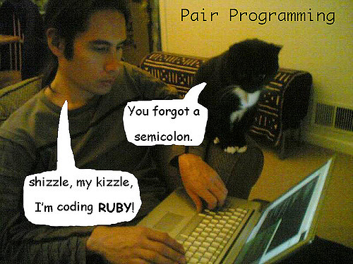
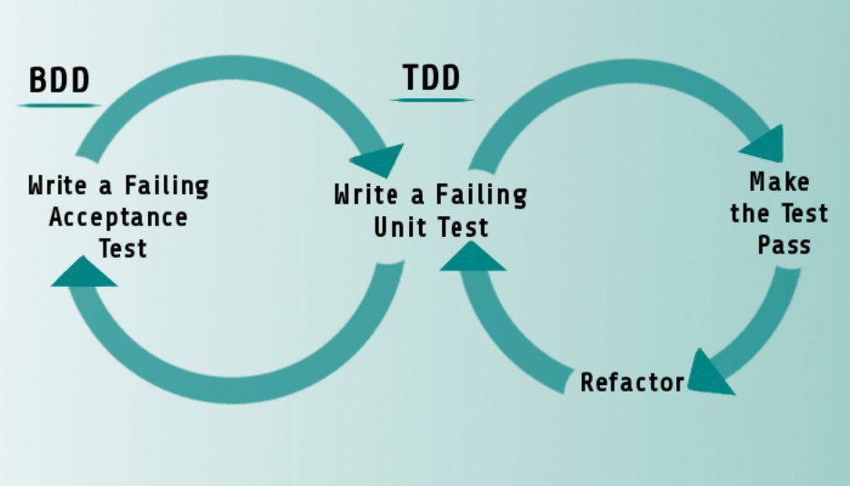
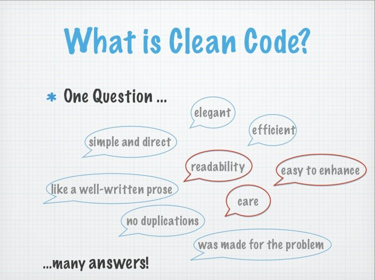

|30 mins|Welcome and introductions| |30 mins|Introduction to the DSP| |2 hours|Hands on with the DSP| |1 hour|Continuous integration with Drone| |45 mins|Lunch| |30 mins|Securing applications in the Home Office| |1 hour accessibility|Welcome and introductions| |15 mins|Welcome and introductions| |15 mins|Welcome and introductions|
Developers and DevOps Engineers



More detail on the technology stack is kept on trello, showing which technologies we are investing in and which are on their way out